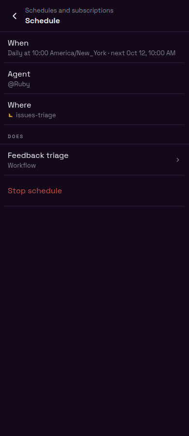
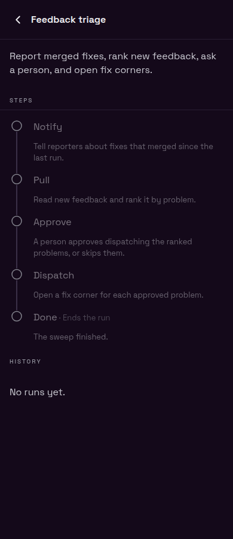
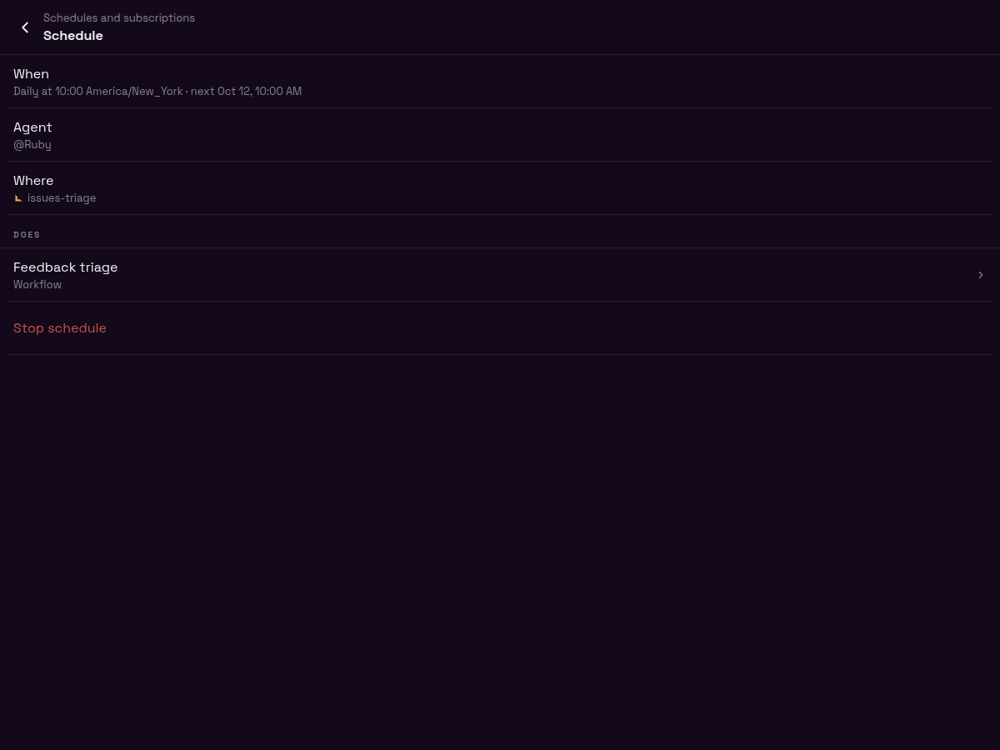
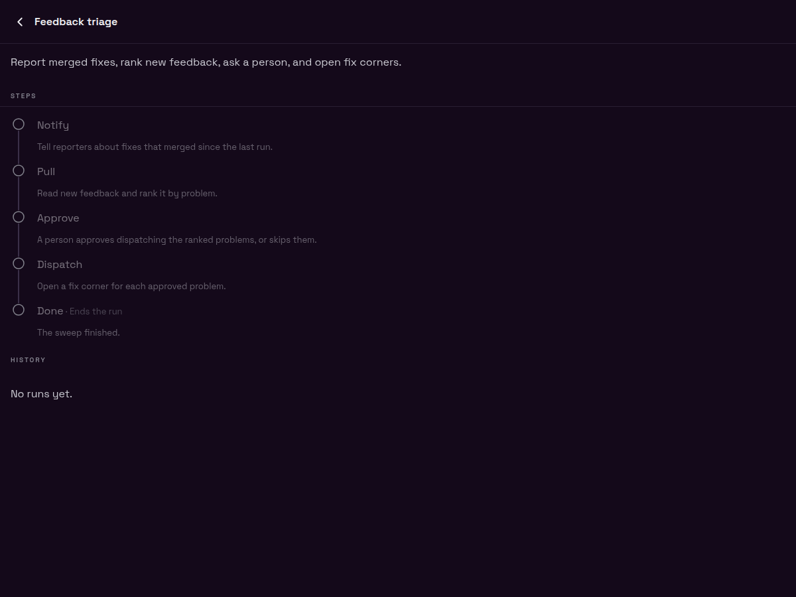

Schedule · phone
390 × 900. Tap Does to open the workflow.

Workflow · phone
390 × 900. Steps and History live here.

Schedule · desktop
1200 × 900 viewport.

Workflow · desktop
1200 × 900 viewport.

Approved layout rendered from the actual Beeline screens, fonts, and dark theme. Schedule details keep When, Agent, Where, the linked Does row, and Stop; the workflow owns Steps and History. The schedule shown is Daily 10:00 America/New_York with @Ruby in issues-triage. Rebuild the interactive frames with node --import tsx .lavish/schedule-pages/build.ts.
390 × 900. Tap Does to open the workflow.

390 × 900. Steps and History live here.

1200 × 900 viewport.

1200 × 900 viewport.
